113 — Colas, entrega, reintentos y dead-letter queues
Parte: 09 — Datos, mensajería, serverless e integración
Nivel: avanzado · Horas estimadas: 4
Laboratorio: messaging · Estado: EXECUTABLE_CORE
🎯 Propósito
Separar en el tiempo quien produce trabajo de quien lo hace, y asumir con precisión lo que eso obliga a aceptar. La clase parte de una afirmación que conviene creerse antes de diseñar nada: la entrega exactamente una vez no existe sobre una red, y lo que se vende con ese nombre es otra cosa. De ahí salen las tres decisiones de la clase: cuánto tiempo se oculta un mensaje mientras se procesa, cuántas veces se reintenta y qué se hace con lo que nadie pudo procesar.
📚 Resultados de aprendizaje
Al finalizar podrás:
- Explicar qué garantiza cada semántica de entrega y por qué se diseña para al menos una vez.
- Ajustar el tiempo de invisibilidad al tiempo real de proceso.
- Configurar reintentos que no amplifiquen una caída.
- Operar la cola de mensajes fallidos, que sin vigilancia no sirve de nada.
- Decidir si hace falta orden y qué cuesta imponerlo.
🧩 Conceptos centrales
| Concepto | Comprensión verificable |
|---|---|
al menos una vez |
Cada mensaje se entrega una o más veces. Es lo que ofrecen de verdad los sistemas de cola, y obliga a que el consumidor tolere repeticiones. |
tiempo de invisibilidad |
Periodo durante el que un mensaje entregado no se ofrece a otros consumidores. Si el proceso dura más, otro consumidor lo recoge y se duplica el trabajo. |
confirmación |
Señal del consumidor de que el mensaje se procesó. Antes de ella, el mensaje sigue vivo; después, desaparece. |
mensaje venenoso |
Mensaje que falla siempre. Sin límite de intentos, ocupa capacidad indefinidamente y puede bloquear a los que van detrás. |
cola de fallidos |
Destino de lo que agotó sus intentos. Es un sitio para inspeccionar y reprocesar, no un cementerio. |
antigüedad del más viejo |
Segundos que lleva esperando el mensaje más antiguo. Es la señal correcta del estado de una cola; la profundidad sola engaña. |
🧠 Modelo mental
La base de datos correcta depende del patrón de acceso y de las garantías necesarias; distribuir datos convierte latencia, consistencia y fallos parciales en decisiones de diseño.
Aplicado a esta clase, separa siempre cuatro planos: intención (qué necesita el usuario), configuración (qué declaramos), estado observado (qué existe de verdad) y evidencia (cómo sabemos que cumple). Confundirlos produce diseños que se ven correctos en un diagrama pero fallan al operar.
🗺️ Flujo de razonamiento

📖 Desarrollo
1. Lo que de verdad se garantiza
Las tres semánticas, con lo que significan de verdad:
COMO MUCHO UNA VEZ
se entrega y no se reintenta; si algo falla, el mensaje se pierde
útil solo para datos que se pueden perder: telemetría de grano fino
AL MENOS UNA VEZ
se reintenta hasta que se confirma
→ puede entregarse dos veces, y de hecho ocurre
es lo que ofrecen los sistemas de cola de verdad
EXACTAMENTE UNA VEZ
no existe como propiedad de la ENTREGA sobre una red
Y conviene entender por qué la tercera no existe, porque explica todo lo demás:
el consumidor procesa el mensaje y va a confirmar
la confirmación se pierde por la red
el emisor no puede distinguir:
«no llegó y hay que reenviar» de «llegó y se perdió la respuesta»
cualquiera de las dos decisiones se equivoca en un caso
Lo que los proveedores llaman «exactamente una vez» es una de estas dos cosas, y las dos son útiles siempre que se sepa qué son:
deduplicación por ventana se descarta un mensaje repetido con el mismo
identificador dentro de N minutos
→ fuera de la ventana, se vuelve a entregar
proceso transaccional leer, procesar y confirmar dentro de una
transacción del mismo sistema
→ solo vale si el efecto está en ese sistema
Y de ahí la regla que gobierna esta clase entera y que la clase 116 desarrollará:
se diseña para AL MENOS UNA VEZ
y se hace que el consumidor pueda repetir sin efecto adicional
Y antes de nada, lo que cuesta la cola y suele olvidarse:
la respuesta al usuario deja de significar «hecho»
→ hay que decidir qué se le dice y cómo se entera del resultado
el error deja de aparecer donde se originó
→ hace falta correlacionar: el identificador de traza viaja en el mensaje
el sistema gana un estado nuevo: «pendiente»
→ y todo lo que consulte tiene que contemplarlo
2. El tiempo de invisibilidad, que es donde nacen los duplicados
El mecanismo es sencillo y su ajuste causa el error más común de esta clase:
el consumidor recibe el mensaje
el mensaje se oculta a los demás durante T
si confirma antes de T → desaparece
si no → reaparece y otro consumidor lo toma
Y la consecuencia:
si el proceso tarda más que T, el trabajo se hace DOS veces
y nadie da ningún error: los dos consumidores creen que va bien
El ajuste correcto no se hace con la media:
tiempo de proceso, mediana 1,2 s
tiempo de proceso, percentil 99 14 s
tiempo de invisibilidad 30 s ← al menos 2× el p99
Y para procesos de duración muy variable, alargar T no es la solución —porque un consumidor caído retendría el mensaje todo ese tiempo—, sino extender la invisibilidad mientras se trabaja:
T inicial corto, 30 s
y mientras el proceso sigue vivo, se renueva cada 15 s
→ si el consumidor muere, el mensaje vuelve en 30 s, no en 15 min
Y el otro par de errores, simétricos y ambos frecuentes:
CONFIRMAR ANTES DE TRABAJAR
el mensaje desaparece y si el proceso falla, el trabajo se PIERDE
→ esto convierte una cola en «como mucho una vez» sin querer
CONFIRMAR DESPUÉS DE TRABAJAR
correcto, y si el consumidor muere entre el trabajo y la confirmación,
el mensaje se repite
→ es el caso normal, y por eso hace falta poder repetir sin daño
Y una comprobación que conviene hacer explícitamente, porque casi nunca se hace:
matar un consumidor a mitad de proceso, a propósito
y comprobar qué ocurre con el mensaje y con sus efectos
Y el consumo por lotes, que multiplica el problema: si se reciben diez mensajes y falla el séptimo, ¿qué se confirma? La respuesta correcta es confirmar individualmente lo que salió bien; si el sistema solo permite confirmar el lote entero, los seis primeros se repetirán.
3. Reintentos que no empeoran la caída
El reintento inmediato es la peor opción posible, y es la que sale por defecto en mucho código:
la dependencia está saturada
→ los consumidores reintentan de inmediato
→ más carga sobre lo que ya está mal
→ la caída se alarga
Los tres parámetros, y los tres importan:
ESPERA CRECIENTE 1 s, 2 s, 4 s, 8 s… da tiempo a que se recupere
VARIACIÓN ±30 % aleatorio; sin ella, todos reintentan a la vez
LÍMITE DE INTENTOS 3 a 5; sin él, un mensaje venenoso vive para siempre
Y una distinción que ahorra la mayor parte de los reintentos inútiles:
ERROR TRANSITORIO tiempo de espera agotado, 503, conflicto de bloqueo
→ reintentar tiene sentido
ERROR PERMANENTE mensaje mal formado, entidad que no existe,
validación fallida
→ reintentar cinco veces no lo va a arreglar
→ a la cola de fallidos directamente
Separarlos reduce mucho el ruido y acelera el diagnóstico: en la cola de fallidos quedan mezcladas dos cosas muy distintas si no se hace.
Y una tercera categoría que conviene tratar aparte: el mensaje que llega antes de tiempo. Un evento de pago que llega antes de que el pedido exista no es un error permanente ni transitorio: es orden. Reintentar con espera larga suele resolverlo, y si no, es señal de que hace falta el patrón de la clase 116.
La cola de fallidos. Su valor no está en existir, sino en lo que se hace con ella:
sirve para inspeccionar el mensaje y el motivo del último fallo
corregir la causa
reprocesar cuando esté arreglado
no sirve si nadie la mira
Y ahí vuelven dos leyes conocidas: un mensaje en la cola de fallidos no produce ningún error (ley 13) y una cola de fallidos con cuarenta mil elementos deja de mirarse (ley 15). Las dos alertas que lo evitan:
mensajes en la cola de fallidos ≥ 1 → avisar
antigüedad del más antiguo > 1 h → avisar
La primera parece exagerada y no lo es: si llegar a la cola de fallidos es normal, el sistema tiene un problema de diseño, no de operación.
Y lo que hay que guardar con el mensaje para que sea reprocesable:
el cuerpo original, sin transformar
el motivo del último fallo y la traza
el número de intentos y las marcas de tiempo
el identificador de correlación
Y la herramienta de reproceso, que hay que escribir antes de necesitarla: devolver a la cola original en lotes controlados, no todo de golpe, porque devolver cuarenta mil mensajes a la vez reproduce la caída que los generó.
4. Ritmo, retraso y orden
Qué señal usar. La profundidad de la cola engaña:
50.000 mensajes y se consumen 20.000/s → 2,5 s de retraso: bien
200 mensajes y se consumen 2/s → 100 s de retraso: mal
La señal correcta es la antigüedad del mensaje más viejo, que ya está en segundos y se compara directamente con lo que el negocio tolera.
Y el cálculo del tiempo de vaciado, que es lo que hay que saber durante un incidente:
vaciado = profundidad / (capacidad de consumo − ritmo de llegada)
120.000 mensajes, llegan 800/s, se consumen 1.000/s
→ 120.000 / 200 = 600 s = 10 min
y si llegan 1.100/s y se consumen 1.000/s
→ NUNCA se vacía: hay que escalar o parar la producción
Y el escalado del consumidor se hace con la antigüedad, no con la profundidad, por lo dicho arriba. Con un límite: el consumidor escala hasta donde aguanta su dependencia. Cien consumidores contra una base de datos de la clase 109 agotan sus conexiones; la cola solo mueve el cuello de botella.
El orden. La mayoría de los sistemas no lo garantizan, y conviene comprobar si de verdad hace falta:
necesita orden actualizaciones sucesivas del mismo pedido
movimientos de un mismo saldo
no necesita orden notificaciones, envío de correos, indexación
Y cuando hace falta, la respuesta casi nunca es «ordenar todo», sino ordenar por clave:
orden global un solo consumidor: el ritmo lo marca el más lento
orden por clave todos los mensajes de un pedido en el mismo grupo
→ grupos distintos avanzan en paralelo
Y el precio del orden, que hay que aceptar conscientemente:
bloqueo por cabecera un mensaje que falla detiene a los de su grupo
ritmo por grupo limitado; el paralelismo lo da el número de grupos
escalado no se puede repartir un grupo entre dos consumidores
El primero es el que más sorprende: un solo mensaje venenoso paraliza su clave entera hasta que agota intentos.
Y un recurso que evita imponer orden en muchos casos: que el mensaje lleve un número de versión y el consumidor descarte lo viejo. Si llega la versión 4 y luego la 3, se ignora la 3. Resuelve el problema sin ordenar nada.
Y la lista de comprobación de la clase:
☐ el consumidor tolera recibir el mismo mensaje dos veces
☐ el tiempo de invisibilidad es al menos el doble del p99 de proceso
☐ los procesos largos renuevan la invisibilidad mientras trabajan
☐ se confirma DESPUÉS de hacer el trabajo, e individualmente en lotes
☐ los errores permanentes van a fallidos sin reintentar
☐ los reintentos tienen espera creciente, variación y límite
☐ hay alerta por un solo mensaje en la cola de fallidos y por antigüedad
☐ existe herramienta de reproceso por lotes controlados
☐ el escalado usa la antigüedad del más viejo, no la profundidad
☐ está calculado hasta dónde puede escalar el consumidor sin romper
su dependencia
☐ el orden se impone por clave y solo donde hace falta
☐ se ha matado un consumidor a mitad de proceso para ver qué ocurre
Y el cierre que enlaza con la clase siguiente: una cola entrega cada mensaje a un consumidor y lo borra. Cuando el mismo hecho interesa a varios sistemas —y hay que poder volver a leerlo dentro de un mes— hace falta otra cosa, y es la materia de la clase 114.
🔬 Ejemplo trabajado
CloudShop pasa el procesamiento de pedidos a una cola para dejar de hacerlo dentro de la petición del usuario. Funciona el primer día. Los cuatro problemas que aparecen después son los cuatro apartados de esta clase, en orden.
Punto de partida.
```text síncrono con cola latencia de la petición del usuario 2,8 s 140 ms fallos visibles al usuario por caída de un sistema de pago 4,1 % 0 % pedidos procesados por segundo 85 1.200
**Problema 1: pedidos duplicados, el 0,4 %.**
```text
pedidos con cobro duplicado en 3 semanas 214
tiempo de invisibilidad configurado 30 s
tiempo de proceso, mediana 1,2 s
tiempo de proceso, percentil 99 47 s ← mayor que 30 s
El percentil 99 superaba el tiempo de invisibilidad: uno de cada cien mensajes se procesaba dos veces, y el sistema no daba ningún error porque los dos consumidores terminaban bien.
Y las llamadas al proveedor de pago lo confirmaban:
cobros solicitados 52.180
pedidos 51.966
diferencia 214
Dos correcciones, y solo la segunda es de verdad:
```text antes invisibilidad 120 s + renovación duplicados por semana 71 4 0 retención tras muerte del consumidor 30 s 120 s 30 s
Subir la invisibilidad bajó los duplicados y empeoró otra cosa: **un consumidor muerto retenía el mensaje dos minutos**. La renovación durante el proceso resolvió las dos a la vez.
Y la corrección estructural quedó anotada para la clase 116: los duplicados residuales solo desaparecen cuando la operación se puede repetir sin efecto adicional.
**Problema 2: la tormenta de reintentos alarga una caída de 4 minutos a 40.**
```text
09:12 el proveedor de pago devuelve 503
09:12 1.200 mensajes/s empiezan a fallar
09:12 reintento inmediato, sin espera ni límite
09:13 carga sobre el proveedor: ×6 respecto a lo normal
09:16 el proveedor se recupera internamente
09:16 la carga de reintentos le impide estabilizarse
09:52 se paran los consumidores a mano; el sistema se recupera
Cuatro minutos de fallo del proveedor, cuarenta de incidente. La configuración corregida y su ensayo:
```text antes después espera entre intentos inmediata 1-2-4-8-16 s variación no ±30 % límite de intentos ninguno 5 corte tras fallos consecutivos no sí
caída simulada de 4 min: duración del incidente 40 min 5 min 10 s carga de reintentos sobre el proveedor ×6 ×1,3
**Problema 3: la cola de fallidos con 41.000 mensajes que nadie miró.**
```text
mensajes en la cola de fallidos 41.216
el más antiguo 67 días
alertas configuradas sobre ella ninguna
pedidos afectados sin procesar 1.847
el resto reintentos del mismo pedido y ruido
Es la ley 13 otra vez: 41.000 mensajes parados no producen ningún error. Y al inspeccionarlos apareció que el 71 % eran errores permanentes que se habían reintentado cinco veces cada uno:
validación fallida (campo obligatorio ausente) 18.400
entidad inexistente 8.900
mensaje mal formado 2.100
transitorios reales 11.816
Las correcciones:
```text antes después errores permanentes 5 reintentos a fallidos directo alerta por ≥ 1 mensaje no sí alerta por antigüedad > 1 h no sí herramienta de reproceso no había por lotes de 500 mensajes en fallidos, estado normal 41.216 0-3
Y el primer reproceso enseñó por qué los lotes importan: **devolver 11.816 mensajes de golpe reprodujo la saturación** que los había generado. En lotes de 500 con pausa, se vaciaron en 40 minutos sin incidente.
**Problema 4: el orden, que hacía falta solo para una cosa.**
```text
síntoma un pedido cancelado y luego modificado quedaba activo
causa los dos mensajes se procesaron en orden inverso
frecuencia 9 casos en 2 meses
La primera propuesta fue una cola con orden global:
```text sin orden orden global orden por clave mensajes por segundo 1.200 85 1.140 consumidores en paralelo 40 1 40 casos de orden invertido 9 0 0 bloqueo por un mensaje venenoso no toda la cola solo ese pedido
El orden global habría dividido el ritmo por catorce. Se ordenó por identificador de pedido.
Y para el resto de los consumidores, que no necesitan orden, se aplicó la alternativa del apartado cuarto:
```text
el mensaje lleva número de versión del pedido
el consumidor descarta lo que sea anterior a lo que ya aplicó
→ resuelve el problema sin ordenar nada
La señal de escalado, corregida por el camino.
```text antes después señal profundidad > 10.000 antigüedad > 60 s escalados innecesarios al mes 14 0 retrasos no detectados 3 0 límite de consumidores sin límite 24 (por las conexiones de la clase 109)
La última fila viene de un incidente encadenado: al escalar a 90 consumidores durante un retraso, **se agotaron las conexiones de la base de datos** y cayó también la parte síncrona. La cola movió el cuello de botella en lugar de eliminarlo.
**A los cinco meses.**
```text antes después
latencia de la petición 2,8 s 140 ms
pedidos duplicados 214 / 3 sem 0-2
duración de un incidente de 4 min 40 min 5 min 10 s
mensajes en cola de fallidos 41.216 0-3
alertas sobre la cola de fallidos 0 2
casos de orden invertido 9 / 2 mes 0
señal de escalado profundidad antigüedad
escalados innecesarios 14 / mes 0
caídas encadenadas por escalar consumidores 1 0
La lección que esta clase traslada a la parte 09: los cuatro problemas tienen la misma raíz. La cola resolvió el acoplamiento en el tiempo y trasladó a la aplicación tres garantías que antes daba la llamada síncrona: que el trabajo se hace una vez, que el error se ve donde ocurre y que las cosas pasan en orden. Ninguna de las tres vuelve sola: hay que reconstruirlas. Y la más difícil —hacer que repetir no tenga efecto— es la única que esta clase no ha resuelto, solo aplazado.
🧪 Laboratorio guiado
Ejecuta desde la raíz:
python classes/part-09-data-messaging-serverless-integration/113-colas-entrega-reintentos-y-dead-letter-queues/lab.py
El laboratorio selecciona el motor de práctica messaging y produce
lab_result.json. El escenario, sus comprobaciones y el artefacto esperado corresponden a
esta clase; no requiere credenciales y deja explícito qué debe revalidarse en un sandbox real.
- Lee
exercise.stepsy formula una predicción antes de ejecutar. - Ejecuta la práctica y verifica todos los elementos de
checks. - Provoca el caso de
negative_testy explica la señal observada. - Materializa
cola-resilienteenevidence/usando la plantilla indicada. - Para proveedor real, sigue
sandbox.requires, registra costo y ejecutadestroy.
Evidencia esperada
El artefacto principal es un flujo que declara orden, entrega y manejo de errores. Además, la entrega debe incluir el comando ejecutado, la salida estructurada y una conclusión que no exceda lo observado.
🏆 Reto verificable
Construye cola-resiliente para el caso CloudShop. Incluye una alternativa descartada,
un supuesto que pueda falsarse, una prueba de fallo y una decisión de rollback.
✅ Criterio de aceptación
- [ ]
lab.pytermina con código 0 y genera JSON válido. - [ ] La entrega conecta al menos tres requisitos con mecanismos verificables.
- [ ] Existe una prueba positiva y una prueba negativa con evidencia.
- [ ] Seguridad, costo y operación aparecen como decisiones, no como anexos.
- [ ] Se declara una limitación y una condición que obligaría a revisar el diseño.
- [ ] Otra persona puede repetir el recorrido sin conocimiento tácito.
⚠️ Errores frecuentes
| Síntoma | Causa probable | Corrección |
|---|---|---|
| Trabajo duplicado sin ningún error visible | El proceso dura más que el tiempo de invisibilidad y el mensaje se reentrega | Ajusta la invisibilidad al doble del percentil 99 y renuévala mientras el proceso siga vivo. |
| Se pierden mensajes cuando un consumidor falla | Se confirma antes de hacer el trabajo | Confirma siempre después, y en lotes confirma individualmente lo que salió bien. |
| Una caída breve de una dependencia se convierte en un incidente largo | Reintento inmediato y sin límite, que amplifica la carga sobre lo que ya está mal | Espera creciente con variación, límite de intentos y corte tras fallos consecutivos. |
| La cola de fallidos acumula decenas de miles de mensajes | Ley 13: nada da error, y ley 15: con esa cifra ya nadie la mira | Alerta desde el primer mensaje y por antigüedad, y envía los errores permanentes sin reintentar. |
| Reprocesar la cola de fallidos vuelve a tumbar el sistema | Se devolvieron todos los mensajes de golpe | Reprocesa en lotes controlados con pausa entre ellos. |
| Escalar los consumidores tumba la base de datos | La cola movió el cuello de botella; el límite real es la dependencia | Fija el máximo de consumidores según lo que aguanta la dependencia y escala por antigüedad del mensaje más viejo. |
🛡️ Seguridad, ética y costo
Trabaja con cuentas propias o sandboxes autorizados. No publiques secretos, identificadores reales ni datos personales. Antes de crear recursos pagos define presupuesto, etiquetas y comando de destrucción; después verifica que no queden recursos huérfanos. Los ejemplos locales enseñan contratos, pero no certifican cumplimiento ni disponibilidad de producción.
❓ Preguntas de comprobación
- ¿Por qué no existe la entrega exactamente una vez y qué se ofrece con ese nombre?
- ¿Cómo se calcula el tiempo de invisibilidad y qué se hace con procesos largos?
- ¿Qué diferencia hay entre error transitorio y permanente a efectos de reintento?
- ¿Por qué se alerta desde el primer mensaje en la cola de fallidos?
- ¿Por qué la antigüedad del mensaje más viejo es mejor señal que la profundidad?
🔗 Referencias
- AWS (2025). SQS: visibility timeout and dead-letter queues — invisibilidad, reentrega y destino de fallidos. https://docs.aws.amazon.com/AWSSimpleQueueService/latest/SQSDeveloperGuide/sqs-visibility-timeout.html
- Azure (2025). Service Bus: message transfers, locks and settlement — bloqueo, renovación y confirmación. https://learn.microsoft.com/azure/service-bus-messaging/message-transfers-locks-settlement
- Google Cloud (2025). Pub/Sub: subscription retry policy and dead lettering — espera creciente y reenvío. https://cloud.google.com/pubsub/docs/handling-failures
- Brooker, M. (2015). Exponential backoff and jitter — por qué la variación importa tanto como la espera. https://aws.amazon.com/builders-library/timeouts-retries-and-backoff-with-jitter/
- Nygard, M. (2018). Release It!, cap. 4 — tormentas de reintentos y cortocircuitos. https://pragprog.com/titles/mnee2/release-it-second-edition/
- Documentación oficial vigente del servicio implementado; registra URL y fecha de consulta.
📥 Descargar: Parte 09 en PDF · Manual integral